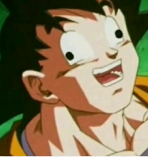
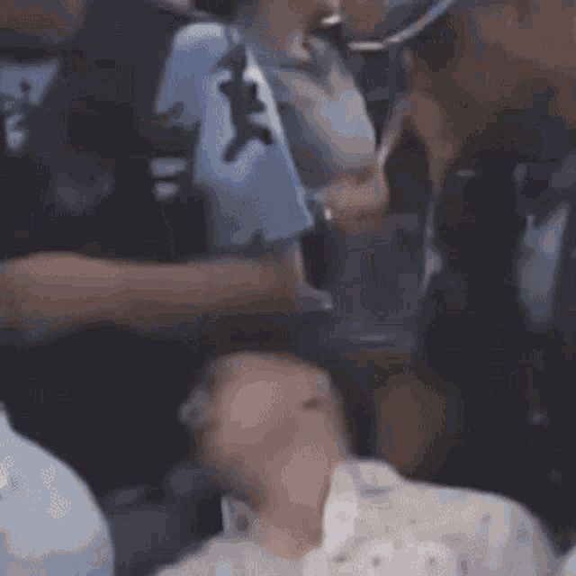

Paso 1: Enviarle un mensaje al Baleado y Thomsen
Paso 2: Encender el computador

Paso 3: Utilizar el mouse para desplazarte y el teclado para escribir
Paso 4: Buscar el acceso directo de Valorant
Paso 5: Darle doble click al acceso directo
Paso 6: Mientras se inicia el launcher, esperar la respuesta de Baleado y Thomsen
Paso 7: Una vez recibida la respuesta, invitarlos a jugar
Paso 8: Como no te contesta, apagar la computadora y hacerse una pajaringa
Preparate una buena playlist y a jugar con la motomami de fondo
